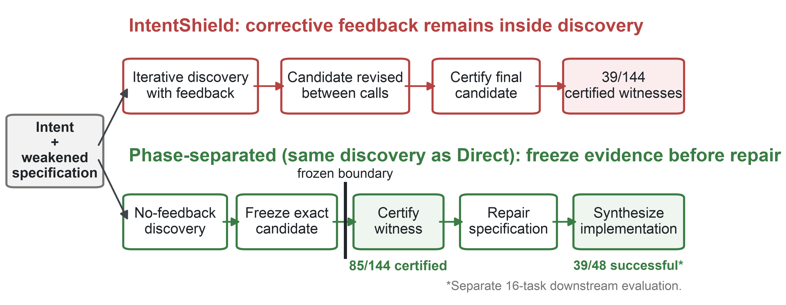
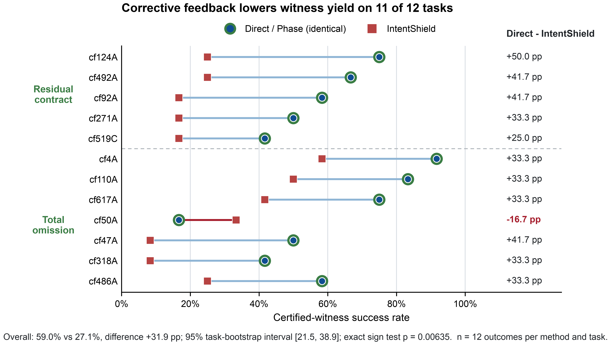

When Correctness Feedback Erases Evidence: Phase-Separated Completeness Auditing in Verus
Abstract
Formal verification establishes that a program satisfies its written contract, but not that the contract captures what its author intended. We study completeness auditing as a search for a concrete program that passes a weakened contract while violating intended behavior. Across 12 Verus/Rust tasks and four model families, no-feedback adversarial discovery certifies 85 of 144 outcomes, while IntentShield, which provides corrective feedback during discovery, certifies 39. The task-level difference is 31.9 percentage points on average, with 11 of 12 tasks favoring no-feedback discovery. A phase-separated execution independently certifies 85 of 144 outcomes before freezing the selected candidate for repair. In a separate 16-task evaluation, phase-revised specifications yield 39 of 48 successful implementations, compared with 30 of 48 for IntentShield-revised specifications and 14 of 48 for the original weakened specifications. The effect did not reproduce in the available Dafny or Lean evaluations.

Primary result
Direct discovery produces certified completeness witnesses in 59.0% of outcomes, compared with 27.1% for IntentShield. The effect appears in both omission strata, but the paper deliberately limits the conclusion to the studied Verus/Rust setting.

Materials
The source archive contains the camera-ready LaTeX, figures, references, and companion aggregate-analysis package. Full model-call replay requires additional raw prompts, responses, checker outputs, and execution metadata, as documented in the paper.
Paper text is released under CC BY 4.0.